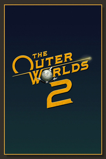

 |
|
| Tiempo de juego | No Jugado |
| Última actividad | Nunca |
| Añadido | 17/10/2025 2:17:30 |
| Modificado | 17/10/2025 2:18:04 |
| Estado de finalización | Not Played |
| Librería | Playnite |
| Fuente | 6TB STORE |
| Plataforma | PC (Windows) |
| Fecha de lanzamiento | 29/10/2025 |
| Puntuación de la Comunidad | |
| Puntuación de la Crítica | |
| Puntuación de usuario | |
| Género | Acción Aventura Rol |
| Desarrollador | Obsidian Entertainment |
| Editor | Xbox Game Studios |
| Característica | Cloud Saves Compat. Total Con Mando Estadísticas Logros De Préstamo Familiar Un Jugador |
| Enlaces | Punto de encuentro Discusiones Guías Noticias Página de la tienda PCGamingWiki Logros |
| Tag | Acción Aventura Buena trama Capitalismo Ciencia ficción Exploración Las elecciones importan LGBTQ+ Mundo abierto Personalización de personajes Política Políticos Primera persona Protagonista femenina Rol Rol de acción Sangriento Simulador de política Un jugador Violentos |
The Outer Worlds 2 es la esperada continuación del galardonado juego de rol de ciencia ficción en primera persona creado por Obsidian Entertainment (se dice fácil, ¿eh?). ¡Despeja tu agenda y prepárate para una aventura repleta de acción con una nueva tripulación, nuevas armas y nuevos enemigos en una nueva colonia! ¡Todo muy nuevo!
En tu papel de audaz (y seguramente de buen ver) agente del Consejo de Administración Terráqueo, tendrás que descubrir el origen de unas devastadoras fisuras que amenazan con destruir a la humanidad al completo. Tu investigación te conducirá a Arcadia, lugar de origen del acelerador supralumínico, donde el destino de la colonia, y, en definitiva, de toda la galaxia, dependerá de las decisiones que tomes, es decir, de tus puntos fuertes, tus defectos, tu tripulación y las facciones en las que quieras confiar.
Explora una nueva frontera
La colonia de Arcadia se halla inmersa en una guerra entre facciones, cuando el supuestamente benévolo gobierno del Consejo se enfrenta a una rebelión de su orden religiosa y a una invasión corporativa. A la vez que las destructivas fisuras se propagan por la colonia, cada facción lucha por controlarlas o cerrarlas según convenga a sus metas. Desplázate por las distintas zonas, descubre historias ocultas y da forma al destino de un sistema solar al borde del colapso.
Tú mandas, así que tú decides
Crea un personaje con las habilidades y rasgos que más se ajusten a tu estilo de juego. La colonia reacciona a cada uno de tus movimientos, forjando una historia que puedes hacer tuya. Puedes consagrarte a la diplomacia, tirar de estrategia, sembrar el caos o elegir una senda totalmente distinta. ¡Y sí, también puedes jugar sin pensar!
Enrola a tus compañeros
Recluta a compañeros con características, trasfondos y objetivos únicos. Ya decidas ayudarlos a que consigan lo que ambicionan o manejarlos para que te echen una mano con tus objetivos, tu influencia determinará cómo se desarrollan (o mueren), lo que los convierte en una parte integral de la historia que crearéis juntos.
Gráficos de alta fidelidad
Explora Arcadia con todo lujo de detalles. The Outer Worlds 2, que se puede mostrar en resolución 4K en dispositivos compatibles y sin límite de fotogramas en PC, ofrece una experiencia fluida a lo largo de sus planetas alienígenas, sus ciudades de neón y sus entornos espaciales fracturados.
Trazado de rayos
El trazado de rayos le añade una mayor capa de profundidad y realismo a Arcadia. Todo ayuda a crear una experiencia más dinámica e inmersiva: desde el brillo de las anomalías de las fisuras hasta los reflejos de los carteles de neón en las calles empapadas por la lluvia, las sombras, la iluminación o los reflejos avanzados.
Compatibilidad con DLSS, FSR y XeSS
Disfruta de un mayor rendimiento en todos los sistemas. The Outer Worlds 2 es compatible con el escalado de NVIDIA DLSS, AMD FSR e Intel XeSS, lo que le brinda un mejor aspecto visual y una velocidad de fotogramas más rápida independientemente de la GPU.
HDR
Sumérgete en Arcadia con la compatibilidad con el alto rango dinámico. El HDR mejora el contraste y la profundidad del color en los monitores compatibles, lo que hace que las luces de neón, los cielos alienígenas y los fogonazos de las armas tengan un color más vivo y natural.
Compatibilidad ultrapanorámica
Disfruta más de Arcadia, desde las enormes instalaciones empresariales hasta la inmensidad del espacio, con la compatibilidad con monitores ultrapanorámicos 21:9. Observa el futuro fracturado de la colonia con un campo de visión más amplio y una perspectiva más cinematográfica.